선린인터넷고등학교 게임 개발 동아리에 오신 것을 환영합니다 :)
선린인터넷고등학교 게임 개발 동아리에 오신 것을 환영합니다 :)
ZER0PEN은 선린인터넷고등학교의 게임 개발 동아리입니다. 오픈소스 동아리 levdev에서 시작되었으며, 현재는 게임 개발을 하고 있습니다.
ZER0PEN의 ZER0는 컴퓨터 언어가 0과 1로 구성되어 있다는 점에서 가져오게 되었고, 0PEN은 오픈소스 개발을 지향한다는 점에서 가져오게 되었습니다.